現行
丸頭ピン＋値札
今のロゴ。丸いピンの頭の中に値札が入った形。eatmap のどちらのピンとも形が違う、というのが今回の出発点。
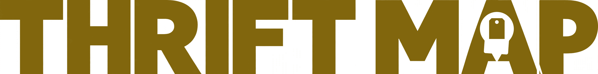
HEADER — 実寸 164px
A の拡大（左）と、実際にヘッダーに載る大きさ（上）。
1
カードピン（番号＋値札）
KAPITAL マップのサムネピンをそのままロゴに入れた形。黒帯ヘッダーに番号「1」、白い本体に値札、下中央にしっぽ（輪郭＋白芯は実物ピンの作りと同じ）。eatmap らしさが一番強い。
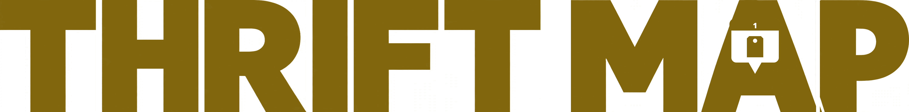
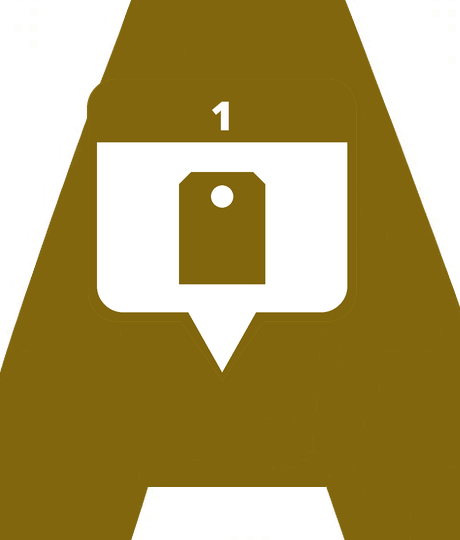
HEADER — 実寸 164px
A の拡大（左）と、実際にヘッダーに載る大きさ（上）。
2
カードピン（帯だけ）
案1から番号と値札を抜いた形。カード＋帯＋しっぽのシルエットだけで見せる。小さいサイズで一番潰れにくい。
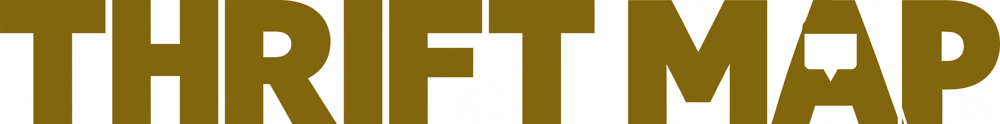
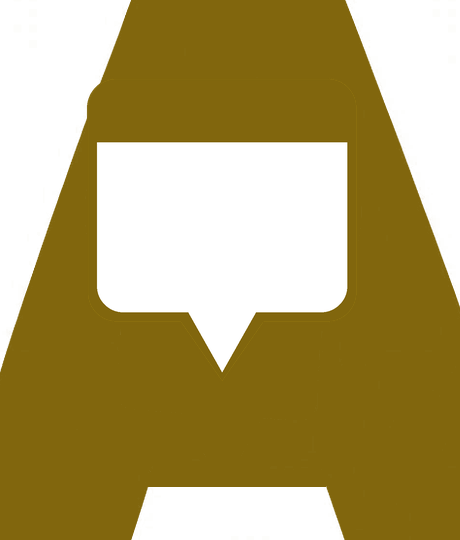
HEADER — 実寸 164px
A の拡大（左）と、実際にヘッダーに載る大きさ（上）。
3
丸ピン（eatmap の地図ピン）
スケッチ地図の実物のピン。丸＋リング＋番号で、しっぽはなし。地図の上ではこの丸が並んでいる。
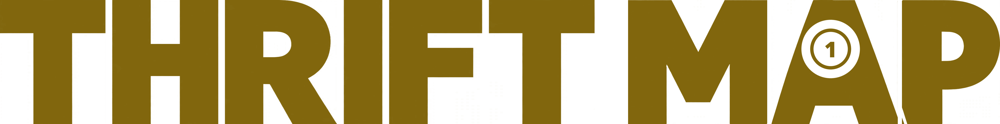
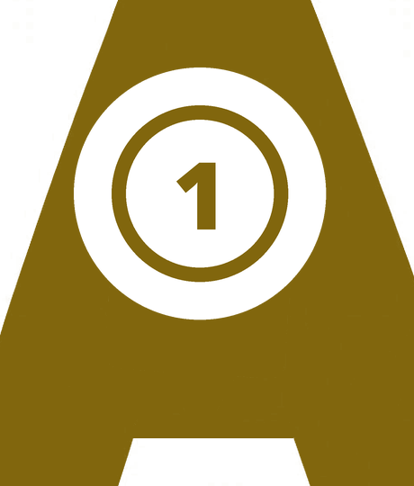
HEADER — 実寸 164px
A の拡大（左）と、実際にヘッダーに載る大きさ（上）。
4
スケッチ線ピン
eatmap の手描き地図の「線」に寄せた形。二重線のアウトラインで描いたピンで、中は抜いて値札だけ白で置いた。
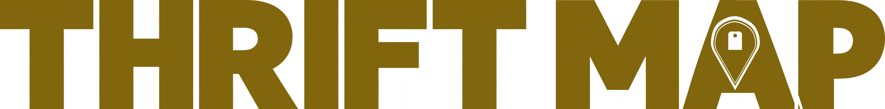
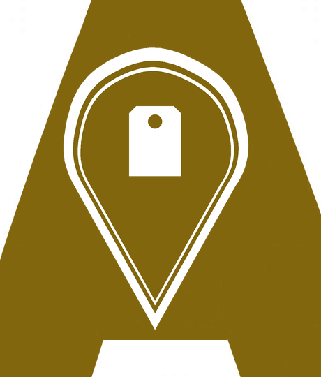
HEADER — 実寸 164px
A の拡大（左）と、実際にヘッダーに載る大きさ（上）。
5
カードピン（長いしっぽ＋斜め値札）
カードピンのしっぽを現行ピンの先端くらいまで長く伸ばし、値札を斜めに吊るした形。カード案の中で一番「ピン」らしく見える。
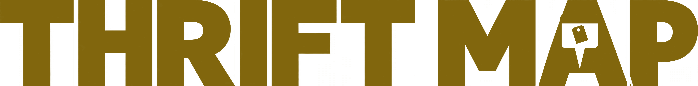
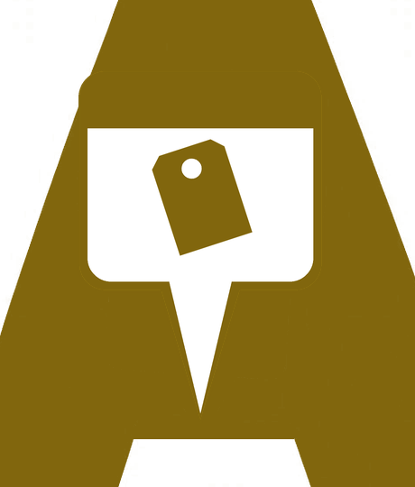
HEADER — 実寸 164px
A の拡大（左）と、実際にヘッダーに載る大きさ（上）。